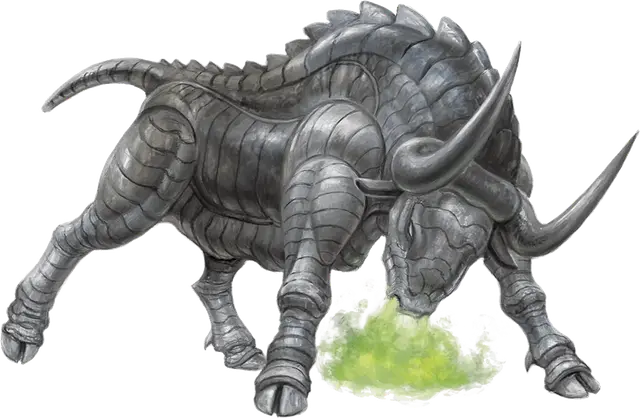

Горгона
Gorgon
Большой Монстр, без мировоззрения

Класс Доспеха 19 (природный доспех)
Хиты 114 (12к10 + 48)
Скорость 40 футов
| мод | спас | ||
|---|---|---|---|
| СИЛ | 20 | +5 | +5 |
| ЛОВ | 11 | +0 | +0 |
| ТЕЛ | 18 | +4 | +4 |
| мод | спас | ||
|---|---|---|---|
| ИНТ | 2 | −4 | −4 |
| МДР | 12 | +1 | +1 |
| ХАР | 7 | −2 | −2 |
Навыки Восприятие +4
Иммунитет к состояниям окаменение
Чувства тёмное зрение 60 футов, пассивное Восприятие 14
Опасность 5 (1800 опыта)
Бонус мастерства +3
Среда обитания Лес, Луг, Холмы
Особенности
Растаптывающий рывок. Если горгона переместится как минимум на 20 футов по прямой к существу, а затем в том же ходу попадет по нему атакой бодания, эта цель должна преуспеть в спасброске Силы Сл 16, иначе будет сбита с ног. Если цель сбита с ног, горгона может бонусным действием совершить по ней одну атаку копытами.
Действия
Бодание. Рукопашная атака оружием: +8 к попаданию, досягаемость 5 футов, одна цель. Попадание: Колющий урон 18 (2к12 + 5).
Копыта. Рукопашная атака оружием: +8 к попаданию, досягаемость 5 футов, одна цель. Попадание: Дробящий урон 16 (2к10 + 5).
Окаменяющее дыхание (перезарядка 5–6). Горгона выдыхает окаменяющий газ 30-футовым конусом. Все существа в этой области должны преуспеть в спасброске Телосложения Сл 13. При провале цель начинает превращаться в камень и становится опутанной. Опутанная цель должна повторить спасбросок в конце своего следующего хода. При успехе эффект на этой цели оканчивается. При провале цель становится окаменевшей, пока не будет вылечена заклинанием высшее восстановление или подобной магией.
Описание
Немногие остаются в живых после встречи с горгоной и могут рассказать об этом. Тело этого существа покрыто металлическими пластинами, а из ноздрей валит зеленый пар.
Жуткое строение. Окрас железных пластин горгон варьируется от воронено-чёрного до серебристо-белого, но эта естественная броня никоим образом не сковывает движение и не ограничивает мобильность. Их тела выделяют жир, смазывающий пластины. Больные или обездвиженные горгоны, как лишаем или плесенью, покрываются ржавчиной. Когда заржавевшая горгона двигается, пластины трутся друг об друга, издавая визг и скрежет.
Чудовищный хищник. Когда горгона замечает свою потенциальную жертву, она нападает с устрашающим металлическим звоном. Попав, она сбивает врага и опрокидывает его навзничь, а затем затаптывает до смерти своими ужасными копытами. Окруженная противниками, горгона выдыхает смертоносные испарения, чтобы поразить существ, обратив их в камень. Проголодавшись, она разбивает окаменевшую добычу на куски и, используя свои крепкие зубы, перемалывает камни в песок, которым питается. Целая сеть пробитых в чаще троп и поваленных деревьев окружает логово горгоны, заваленное не съеденными обломками поверженных врагов.